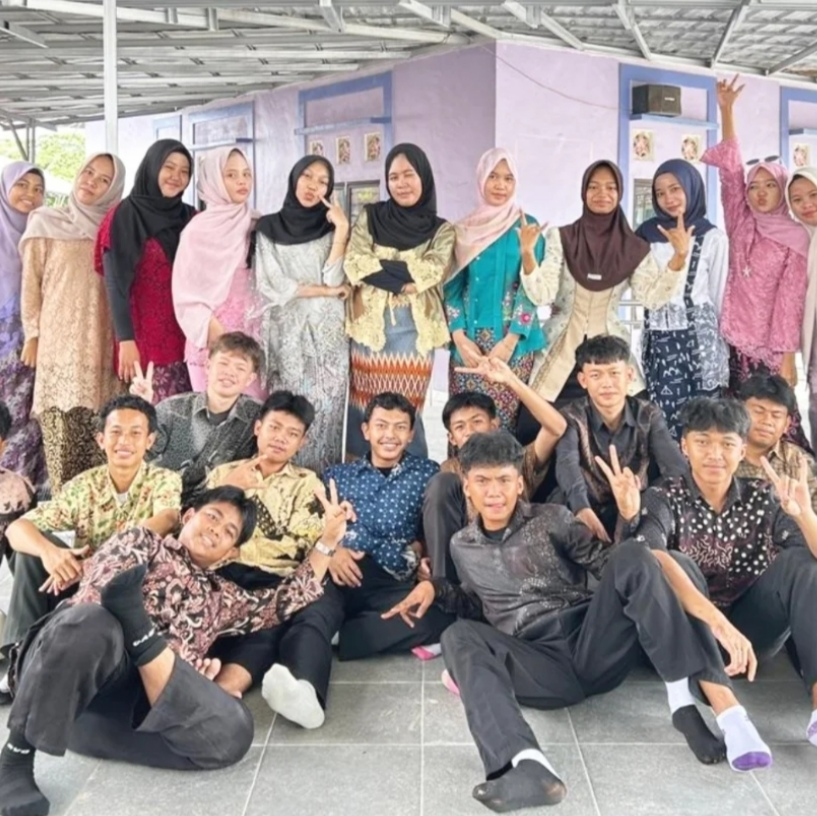
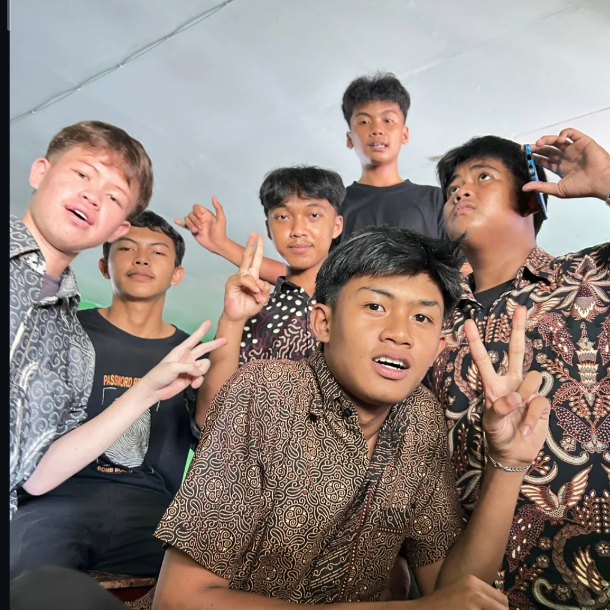

1. Foto Bersama Satu Kelas
Momen foto bersama di lapangan sekolah sebelum apel pagi dimulai. Semua siswa tampak antusias mengenakan batik dengan beragam motif dari daerah masing-masing.

2. Sesi Foto bersama Wali Kelas
Pak Guru ikut serta mengenakan batik khas Jawa Tengah. Beliau memberikan sambutan singkat tentang pentingnya melestarikan warisan budaya batik.

3. Makan Siang Bersama di Kelas
Setelah pelajaran selesai, kami merayakan momen ini dengan makan siang bersama di kelas menggunakan meja yang dirapatkan.
4. Sesi Unjuk Motif Batik Terfavorit
Perwakilan dari setiap kelompok maju ke depan kelas untuk menjelaskan sejarah singkat dan asal-usul motif batik yang mereka pakai hari ini.
5. Momen Candid Keakraban Kelas
Momen keseruan saat jam istirahat berlangsung. Tampak teman-teman sedang mengobrol santai sambil mengabadikan foto selfie bersama.
6. Foto Penutup Sebelum Pulang Sekolah
Sesi foto terakhir di depan koridor kelas sebelum jam pulang. Senyuman ceria menutup peringatan Hari Batik Nasional tahun ini.